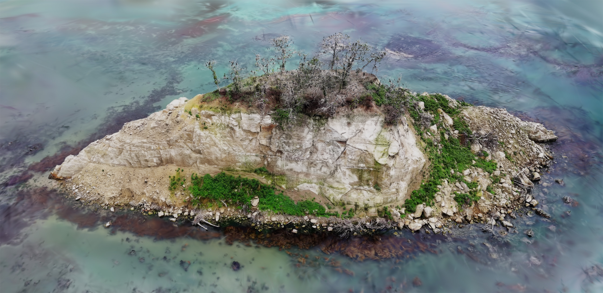

見附島アーカイブへようこそ
能登半島地震により大きく姿を変えた見附島。その記憶と景観を未来へつなぐための記録プロジェクトです。
見附島とは
見附島は石川県珠洲市に位置する高さ約30メートルの奇岩です。海から突き出た姿が帆船に似ていることから通称「軍艦島」とも呼ばれてきました。古くから地域の象徴として親しまれ、周囲の自然とともに多くの人々を魅了してきました。

被害を知る
2024年の能登半島地震により、見附島の表面や周辺の地形が大きく損傷を受けました。崩落した岩肌や変化した海岸線は、災害の影響を物語っています。本アーカイブでは、被災前後の姿を比較し、被害の実態をわかりやすく伝えていきます。

被災前後の動画比較
スライダーを動かして、被災前後の映像を同時に確認できます。
変化を見守る
地元住民や支援者から提供された写真をもとに、見附島の時系列変化を可視化するタイムラプス映像を作成中です。写真の提供や情報の提供にご協力いただける方はプロジェクトチームまでご連絡ください。

2022年6月20日撮影
2025年8月13日撮影
ギャラリー
ドローン撮影とフォトグラメトリを活用し、見附島の精密な3Dモデルを構築しています。完成したモデルは、防災研究や観光振興、地域教育に活用できるよう公開を予定しています。